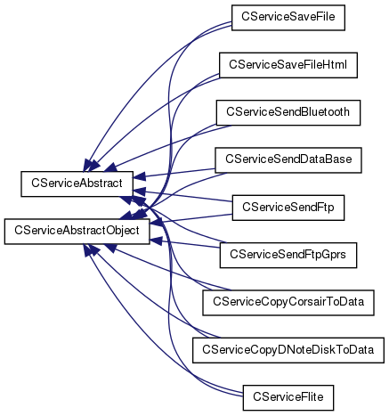

Page principale
Espaces de nommage
Classes
Fichiers
Liste des classes
Index des classes
Hiérarchie des classes
Membres de classe
Graphe hiérarchique des classes
Aller à la hiérarchie des classes en mode texte

Tout
Classes
Espaces de nommage
Fichiers
Fonctions
Variables
Énumérations
Valeurs énumérées
Macros
Généré le Thu Jan 5 2012 16:52:07 pour project_c2a par
1.7.1
 1.7.1
1.7.1